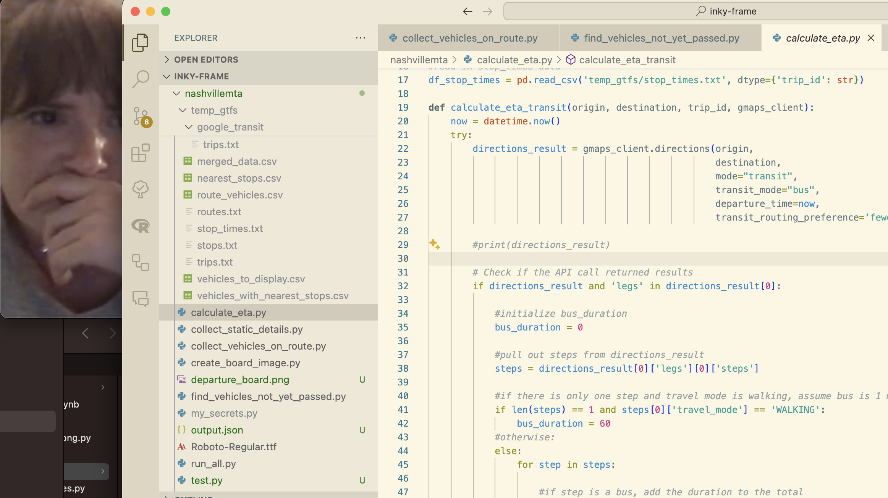

I was basking in the glory of finishing my box office sign one day when my sister1 sent me this video of an English man making a business out of his passion for railway departure departure boards. I immediately thought, “this is so cool,” then thought maybe I can do something similar with our mediocre bus network2 here in Nashville using what I learned from the box office sign project. I don’t have a car and rely on this middling bus network to get around, so it would be quite useful to have my own sign that showed when buses would be arriving near my house so that I could better plan my travels.
This type of sign would be very different than what I built for movie showtimes because the data source was completely unknown to me, and also it would need to refresh every minute or so, as opposed to every day. The Inky Frame e-ink screen that I used for the box office sign project is probably not the right hardware to display such a sign because it takes about 20 seconds for the screen to refresh itself, so by the time the new departure times are shown they would already be out-of-date. However I decided to soldier on with wrangling the data and building something for the e-ink sign, and will figure out better hardware to use at a later time.
Transit data
On the quest to find a data source for this bus departure board, my first thought was obviously that I want to use whatever Google Maps uses to show local public transportation information. A bit of googling revealed that Google collects data from transit systems in a special kind of format called “General Transit Feed Specification (GTFS)”. Really there are two kinds of feeds: GTFS Static and GTFS Realtime. As the name implies, GTFS Static feed contains data that doesn’t change about a transportation network, such as the stop locations, trip details or schedule. The GTFS Realtime feed on the other hand contains realtime information about the network, like the vehicle positions and service alerts.
After digging on the GTFS website I found a repository of network GTFS feeds at Transitland. I searched for Nashville at this site and found their static feed and realtime feed.
Next I tried to google how to query the realtime feed but couldn’t find any clear documentation or example project to inspire me. So I did what we’re all doing these days and turned to ChatGPT, which gave me some great python code to get started with.
Code
There are a few steps needed to create my departure board sign:
- Download static trip information from GTFS Static feed
- Find buses near me on the routes I care about from the GTFS Realtime feed
- Filter the buses on routes I care about to just ones that have not yet passed my closest bus stop on their route
- Calculate each bus’s estimated arrival time to my nearest bus stops
- Structure data for display
To make this board truly live, these steps would next be needed:
- Get display loaded onto board
- Set up automation so that board refreshes every minute
…but as I’ve said, the Inky Frame isn’t the ideal hardware so I’m going to worry about these pieces later.
The code for this project is on Github currently in the same repository as my box office sign. The run_all.py script runs all the necessary steps from top to bottom. Each step has its own script:
collect_static_details.pycollect_vehicles_on_route.pyfind_vehicles_not_yet_passed.pycalculate_eta.pycreate_board_image.py
Some important parameters are stored in a file my_secrets.py, including the latitude and longitude of my apartment, the bus routes I want to look for, and the API key for the Google Maps Directions API. I’ll leave the instructions for setting up this API connection to elsewhere.
I’ll briefly describe each step.
collect_static_details.py
This script downloads the necessary GTFS Static data locally, merges the trips and routes data together, and identifies the bus stops on the specified routes that are nearest to my apartment. The nearest stops are found using the KDTree function from the scipy.spatial package. This algorithm is run for each route and for each direction on each route. The details about the closest stops are then saved locally as a csv file.
collect_vehicles_on_route.py
This script uses the GTFS Realtime feed to find vehicles on the specified routes that are currently out in the field. The GTFS Realtime feed is queried using a combination of the google.transit and requests packages. The GTFS Realtime feed returns a lot of information in a json format, but mostly what is needed are elements within the vehicle field. These elements are queried and then restructured into a dataframe and outputted to a csv file.
find_vehicles_not_yet_passed.py
Now that we have all the active vehicles, we have to filter the list down to those that we are about, namely those that haven’t yet passed by my house on their route. This script simply compares the latitude and lonitude of the bus positions with the latitude and longitude of the bus stops. This works well enough in my case because the routes near my house are quite linear. This would be an issue if there were lots of turns or odd curves in the routes.
calculate_eta.py
This is the juiciest bit: among the buses not yet passed by my house, calculate their estimated time of arrival to the stops nearest my house. The script that I ended up with is quite simple, but it oversimplifies some complexities in the data, which definitely leads to more inaccurate calculated ETAs.
The core of this script uses the googlemaps python package to query the Directions API to calculate the estimated travel time between the current position of each bus and the bus stop nearest my house. The Directions API returns directions as if you typed the query into Google Maps yourself. If you look for public transit directions, often the directions will first tell you to walk to the transit stop, then get onto the bus, meaning your “trip” will have two “legs”. If you are already at the bus stop, then Google Maps will tell you to just get on the bus, meaning your “trip” will only have one “leg”.
Using this Directions API to calculate ETAs for buses already on route is trickier. Google Maps is expecting the query to come from a person not already on bus, but what I am trying to get is travel time as if the person is already on the bus and does not need to walk to a stop. If the bus is currently positioned near a bus stop, then the Directions API will return a “one-leg trip”, and the ETA spit out by the API can be directly taken as the ETA for that bus. If the bus is not currently next to a bus stop, then the API is going to return a “two-leg trip”, with the first leg being “walking” directions to the nearest stop. Somehow I need to convert this “walking time” into “bus travel time” to either add or subtract from the time given by the “transit” step of the trip. You would add or subtract it depending on whether Google Maps is telling you to walk in the direction of travel or against it (your nearest bus stop may be behind you!)
The image below shows an example of this. Pretend that the gold star is the current position of a bus, and I am trying to calculate its ETA to the stop nearest my house (off-screen). Google Maps will assume that the gold star is a person who first needs to walk to a bus stop, instead of a bus currently in motion. So for my purposes the distance covered by the “walking step” (blue dotted line) needs to be converted to “transit time” and added to the time given by the “transit step” (red solid line).

In order to accurately capture this ETA time, I know I would need to do the following:
- find the stop before and the stop after the current position of the bus (i.e., the start of the “walking” step represented by the gold star above)
- determine whether walking step is in the direction of travel or not (in the above example, it is in the direction of travel)
- if walking step is in the direction of travel: convert distance to time and add to total ETA time
- if walking step is not in the direction of travel: convert distance to time and subtract from total ETA time
…but I got tripped up on step 1 and couldn’t find a good solution. I can’t use a simple comparison of latitude and longitude here because the routes of the bus are more complicated towards the terminuses (termini?) so the comparison would not be accurate. I can’t try to find the two closest stops to the current position of the bus, because it’s not guaranteed the two closest stops would be in front of and behind the bus. The API itself doesn’t seem to return any data that I can leverage to find the stops before and after the current position.
So instead of getting stuck on this point forever, I decided to move on and just take the ETA from the transit step as the total ETA (unless the stop was less than one stop away, in which case I just assumed it was a minute away). Maybe I’ll have an epiphany one day that will help me solve this issue.
create_board_image.py
Now in the home stretch: the output of the calculate ETA step is read in and manipulated to create a png image displaying all of the active buses and their ETAs. Not very much exciting to say here, except that it was slightly more complicated than the box office sign because I drew shapes around the bus numbers in order to format them like you see on Google Maps.
Result
All of that work results in a simple sign that looks like this:

Not super attractive but gets the job done. Hopefully one day soon I’ll figure out how to put this into action on an actual working sign. I may need to invest into a soldering iron.
Footnotes
Sisterly code review ↩︎
Shout out to our mayor Freddie O’Connell though who is pounding the pavement to get a transit referendum passed that will breathe some much needed life into public transportation here.↩︎